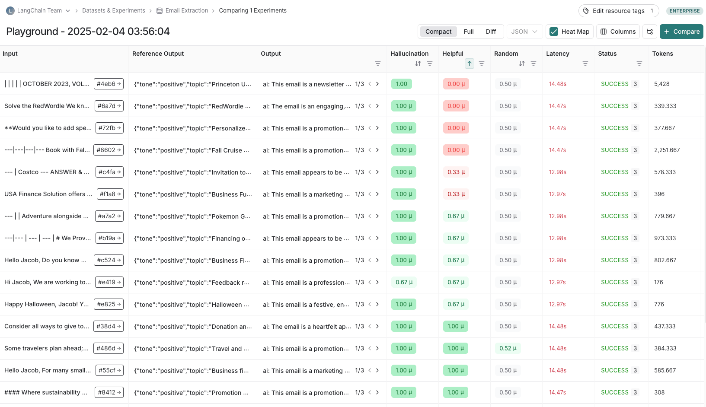

开发者改 Prompt
- 阻断发布
改一个字 system prompt，可能让 10% 的请求从"答对"变成"答错"。但大多数团队改 prompt 的流程是：直接改代码 → 提交 → 上线 → 等用户反馈。这和"无测试直接部署"没有区别。本节讲怎么把 prompt 当成代码来版本管理，用 golden set 和 canary 做门禁，让改 prompt 这件事从"祈祷不出事"变成"有数据支撑的决策"。
改一次 prompt 就是一次发布。和代码发布一样，它需要版本管理、自动化测试、灰度发布和回滚能力。Prompt registry 把"提示文本 + 变量模板 + 模型版本 + 参数"打包成一个不可变版本，通过 golden set 回归和 canary 流量验证后才允许上线。
先做一个类比。代码和 prompt 的共同点是"改一行都可能出事"，但两者的安全网完全不同：代码有编译器、类型系统和单测替你兜底，prompt 什么都没有。你改一行 Java，编译器立刻告诉你类型不匹配；你改一个字 system prompt，没有任何工具会告诉你"这句话会让 10% 的请求答错"——它只会安静地让那 10% 的用户体验变差。这就是为什么 prompt 需要一套比代码更重的流程：既然没有免费的静态检查，就只能用"版本化 + 回归测试 + 灰度"来人工补上这道安全网。
代码改一行，编译器会帮你检查类型和语法。Prompt 改一个字，没有任何工具能告诉你"会不会出问题"。更要命的是，prompt 的改动影响面极难预测——加一个"请简洁回答"可能让某些场景的输出太短而丢信息，去掉一个约束条件可能让模型开始幻觉。
Prompt registry 的思路借鉴自 Docker 镜像 registry：每个 prompt 版本是一个不可变制品，包含完整的可复现信息。不是只存一段文本，而是存一个"可执行的规格说明书"。
| 字段 | 为什么必须 pin |
|---|---|
| 提示文本 | system prompt + few-shot 示例 + 输出格式说明。一个字都不能含糊 |
| 变量模板 | 哪些变量在哪里插入、用什么分隔符。变量拼接 bug 是最常见的线上事故之一 |
| 模型与版本 | 不只是 "gpt-4o"，要精确到 "gpt-4o-2024-08-06"。同名不同版本行为可能差异显著 |
| 采样参数 | temperature、top_p、max_tokens、stop sequences。temperature 从 0 改到 0.3 可能让输出质量波动翻倍 |
| 依赖的配置 | RAG 检索的 top_k、工具定义列表、输出 schema 版本。这些变了，prompt 的行为也跟着变 |
Registry 的价值不只在"存住了"，更在于每个版本有明确的状态，而状态之间的流转由门禁而不是由人的心情决定。把状态机画出来，团队里"这版到底能不能上"的争论会少一大半：
有两条边特别值得强调。一是 rolled_back → draft：回滚之后不能直接重试，必须先分析原因。见过太多团队回滚后隔天原样再发一次，指望"这次运气好点"。二是 live → archived 而不是 live → 删除：线上 trace 里记录的是版本号，如果对应的 prompt 内容被删了，几个月后排查历史问题时你会拿着一个版本号却看不到它当时长什么样。Registry 只增不删。
# prompt registry 中一个版本的最小数据模型
prompt_version = {
"id": "summarizer-v3.2.0", # 语义化版本号
"parent": "summarizer-v3.1.0", # 基于哪个版本改的
"author": "zhang.san",
"created_at": "2024-12-01T10:00:00Z",
# 不可变的核心规格
"spec": {
"system_prompt": "你是一个摘要助手。请将输入文本...",
"user_template": "请摘要以下内容：\n{input_text}",
"variables": ["input_text"],
"model": "gpt-4o-2024-08-06", # 精确到版本
"parameters": {
"temperature": 0.3,
"max_tokens": 500,
"stop": ["\n\n人类:"]
},
"dependencies": {
"rag_top_k": 5,
"tools": [],
"output_schema": "summary-v2.json"
}
},
# 评估结果（由 CI 流水线填充）
"eval_results": {
"golden_set_score": 0.87, # 当前版本得分
"baseline_score": 0.85, # 上一版本得分
"delta": +0.02, # 提升
"regression_count": 0, # 退步的用例数
"evaluated_at": "2024-12-01T10:05:00Z"
},
# 发布状态
"status": "canary", # draft → eval → canary → live → archived
"canary_traffic": 0.05
}关键字段是 eval_results 和 status——它们让 registry 不只是存储，而是发布管理的核心。status 从 draft 到 live 的流转必须有评估门禁把关。
Golden set 是一组精心挑选的测试用例，用来回答一个问题："这一版 prompt 和上一版比，是变好了还是变差了？"它不是越多越好，而是越有代表性越好。
Golden set 不是"一列输入 + 一列期望输出"这么简单。要让它在半年后还能用，每条用例至少需要下面这些字段：
| 字段 | 作用 |
|---|---|
case_id | 稳定不变的标识。回归报告靠它把当前分数和历史分数对齐，改了 ID 就等于丢了这条用例的全部历史 |
input | 各个变量的具体取值。来自线上日志的必须先脱敏，否则 golden set 本身就是一个 PII 数据集 |
context | 检索上下文的快照。RAG 场景下这一条最关键——如果不固定 context，每次评估时检索结果都在变，你测的其实是检索系统，不是 prompt |
expected / rubric | 期望输出，或者交给 Judge 的评分标准。开放式任务用 rubric，封闭式任务用 expected |
judge_type | exact / rule / llm_judge / human。不同用例用不同判定方式，混在一个字段里比拆成四个表好维护 |
tags | 场景标签 + 来源标签（线上挖掘 / 历史事故 / 人工构造）。回归报告按 tag 分组，能一眼看出是哪类场景退化了 |
weight | 权重。高频场景的一条用例代表线上几万次请求，不该和一条边界用例等权 |
added_at / last_reviewed | 用于定期清理。超过半年没复核过的用例要重新确认它是否还代表当前的业务形态 |
每条 golden set 用例需要一个"判定方式"来决定当前版本的输出是否可接受。实践中通常组合使用：
| 判定方式 | 适用场景 | 局限 |
|---|---|---|
| 精确匹配 | 输出是固定格式（分类标签、JSON 字段名） | 无法处理同义表达 |
| 规则校验 | 检查格式、长度、必需字段、禁用词 | 只能抓格式问题 |
| LLM-as-Judge | 评估语义质量（准确性、完整性、简洁性） | Judge 有偏差，需要校准 |
| 人工抽检 | 定期抽 golden set 的子集人工复核 | 慢、贵，但最可靠 |
LLM-as-Judge 的关键不是找一个"完美的 Judge"，而是保持一致性：同一个 Judge、同一个评分 rubric、同一个比较方式，贯穿所有版本的评估。只要评估方式一致，版本间的相对比较就有意义。Judge 的各种偏差和校准方法详见 评估方法。
不是"golden set 跑完分数高"就能上线。门禁规则要明确"什么情况下阻断"：
门禁规则写好了，但"怎么把分数读出来"本身是一门小功课。假设你的 golden set 有 55 条用例，旧版本通过 45 条、新版本通过 47 条，总分从 0.82 涨到 0.85。这算"变好了"吗？先把用例分成四类：
| 类别 | 含义 | 本例条数 |
|---|---|---|
| 旧过新也过 | 一直好的用例，无信息量 | 43 |
| 旧不过新也不过 | 一直坏的用例，无信息量 | 6 |
| 旧过新不过（记为 b） | 新版本导致的回归 | 2 |
| 旧不过新过（记为 c） | 新版本带来的改进 | 4 |
这个例子里 b=2、c=4，方向上"改进多于回归"，但注意结论只建立在 6 条不一致用例上。再套上门禁规则看：这 2 条回归是不是"严重回归"？如果那 2 条恰好是"空输入"和"超长输入"这两类边界用例，而它们都是业务刚需场景，那么即使总分在涨，门禁也应该阻断——因为总分掩盖了边界场景的系统性退化。正确动作是：看回归列表 → 找到那 2 条用例的共同点 → 调整 prompt 让它们恢复 → 重新评估，而不是盯着 0.85 > 0.82 直接放行。
这个手算过程说明了一件事：门禁读的不是一个数字，而是一个分布。单条用例级别的"过/不过"翻转，才是真正值得讨论的证据。
这是 golden set 使用中最容易犯的统计错误：把噪声当成信号。假设 golden set 有 100 条用例，旧版通过 85 条（0.85），新版通过 87 条（0.87），报告上写着"提升 2%"——但这个提升很可能什么都不是。
先算一下噪声有多大。把每条用例看成一次伯努利试验，通过率 p 的标准误约为 sqrt(p(1-p)/n)。代入 p=0.85、n=100，得到约 sqrt(0.85 × 0.15 / 100) ≈ 0.036，也就是 3.6 个百分点。换句话说，即使两个版本完全一样，仅仅因为随机性，两次跑出来的分数差个 3-4 个百分点都很正常。2% 的"提升"完全淹没在噪声里。
那怎么办？答案是做配对比较，而不是比总分。关键在于：新旧版本跑的是同一批用例，这是配对数据，比两个独立样本的信息量大得多。具体做法是逐条对比，把用例分成三类：
如果 b=1、c=3，那么"新版更好"这个结论建立在 4 条用例上，显然不足以下判断（这正是配对检验的思路：只看 b 和 c 的相对大小）。但如果 b=1、c=12，即使总分只差 11 个百分点，这个方向也是相当可信的。同样是"提升 2%"，b/c 的分布完全决定了它的含义。
第二个噪声源是 Judge 本身。LLM-as-Judge 即使 temperature 设成 0，换个日期、换个供应商快照，打分也可能漂移。缓解办法有三个：同一条用例让 Judge 跑 k 次（k 取 3 或 5）取多数或均值；新旧版本的评估必须在同一次任务里跑完，不要今天评旧版明天评新版；以及定期用人工标注的小样本校准 Judge，确认它的判断方向没有整体偏移。
落到实践上，一条可操作的原则是：不要盯总分，要盯回归列表。总分是个被平均掉的、统计上很脆弱的数字；而"哪几条用例从通过变成了不通过"是具体的、可复核的、可以拿去和产品讨论的证据。这也是前面门禁规则里"无严重回归"比"总分不降"更重要的原因——前者看的是个体，后者看的是一个噪声很大的平均值。
门禁的产出不该是简单的"过 / 不过"两个状态。全部拦截会让团队想方设法绕过门禁，全部放行又等于没有门禁。更实用的做法是让每条规则和每条用例带上严重度，把结果分成三个等级：
case_id 推送给负责人。只有"哪条用例从通过变成不通过"这种具体证据，才能推动人去修，而不是去争辩。分级要真正落地，关键是把严重度做成用例或规则上的显式字段，而不是每次靠人现场判断。比如规则校验把"缺少必需字段"标成 blocker、"输出长度超限"标成 warning；golden set 用例按业务重要性标上 weight 和 severity。这样门禁引擎聚合时能稳定地回答"这版能不能上"，而且结论可复现、可回查——上个月为什么拦下某个版本，翻出当时的评估记录就能讲清楚，不会变成"当时那个同事觉得不行"。
前面讲的门禁、回归列表、新旧对比，落到真实工具里是什么界面？LangSmith（LangChain 官方评估平台）的文档里有一张"评估实验视图"（experiment view）的截图，正好展示了一次评估实验的完整结果页——它就是 golden set 回归门禁的"产品化形态"。

这张图的关键不是它的具体样式，而是它体现的评估实验的结构。看懂它，你就能看懂任何一门评估工具。核心是三块：① 一个实验（experiment）绑定一份数据集——也就是本节说的 golden set，一份包含若干用例、每条用例有输入和判定标准的数据集；② 实验要对一个"配置"跑一遍——这个配置就是 prompt 版本 + 模型版本 + 采样参数的组合，同一份数据集可以在多个配置上各跑一次，形成对比；③ 结果页逐条展示每条用例的输出和评分——这正是门禁要看的"回归列表"：哪条用例在新配置上从过变不过，一眼可见。你不需要用 LangSmith 才能做门禁，但你需要理解它的数据模型：数据集、配置、实验、逐条结果，这四个概念是任何评估门禁的地基。工具可以换，结构不会变。
Golden set 过了不等于线上没问题。Golden set 只有几百条，线上有长尾的千千万万。Canary 发布把新版本暴露给一小部分真实流量，用可观测性里讲的四个生产信号来验证。
Canary 的核心是对比，不是看绝对值。新旧版本同时跑，对比同一时段的指标：
| 信号 | canary 达标标准 | 不达标意味着 |
|---|---|---|
| 质量分 | canary ≥ baseline - 1% | 新 prompt 在真实分布上表现更差 |
| p95 延迟 | canary ≤ baseline × 1.1 | 新 prompt 导致输出更长或链路更复杂 |
| 错误与拒答率 | canary ≤ baseline + 2pp | 新 prompt 的约束过度或与模型不兼容 |
| 每请求成本 | canary ≤ baseline × 1.15 | 新 prompt 的 token 消耗增加（可能上下文更长） |
逐步扩大流量的节奏通常是 5% → 20% → 50% → 100%，每步观察 1-2 小时（或足够多的请求数）。每一步都要有自动回滚机制：信号触发阈值时，canary 流量自动归零，不需要人工介入。
"自动回滚"这四个字经常停留在文档里。落到实现上，它是一个由指标聚合器驱动、发布控制器执行的闭环，全过程不需要人：
做 canary 时有三个容易踩空的地方：
在 canary 之前还有一个更安全的阶段：影子模式（shadow traffic）。把线上真实请求复制一份发给新版本，但新版本的输出不返回给用户，只记录到 trace 里对比。这样完全没有用户风险，可以收集大量对比数据。
使用闭源 API 时，一个常被忽略的风险是：供应商会在不通知的情况下更新模型版本。你的 prompt 没改、代码没改、数据没改，但模型行为变了。这本质上和"你改了 prompt"是同一件事——模型对同一 prompt 的响应变了。
应对策略：
gpt-4o-2024-08-06），始终指定具体版本，不要用别名（如 gpt-4o）。这样供应商换版本时你不会被波及——直到你主动升级。gpt-4o-2024-05-13 升级到 gpt-4o-2024-08-06 时，走和改 prompt 一样的流程：golden set 回归 + canary 流量验证。不要假设"新版本一定更好"。最终目标是让 prompt 变更走和代码变更一样的工程流程。这意味着：
| 工程实践 | 代码 | Prompt |
|---|---|---|
| 版本管理 | Git | Prompt Registry（或 Git 中的 prompt 目录） |
| 代码审查 | PR Review | Prompt Review（附 golden set 评估结果） |
| 自动化测试 | CI 跑单测 | CI 跑 golden set + LLM-as-Judge |
| 灰度发布 | Feature flag / canary | Canary 5% → 100% 流量 |
| 回滚 | Git revert + redeploy | Registry 切回上一版本 |
| 变更通知 | Slack / 邮件 | 同左，附评估对比报告 |
一个常见问题是：prompt 放在代码仓库里还是独立的 prompt registry 里？小团队放在代码仓库的 prompts/ 目录下加 Git 版本管理就够了；当 prompt 变更频率高于代码发版频率、或非工程团队（产品、运营）需要改 prompt 时，独立 registry + 管理界面更有价值。
某团队上线了完整的 prompt 门禁，golden set 有 120 条用例，LLM-as-Judge 每天都跑。但三个月后他们还是出事了：一次 system prompt 的措辞调整让线上"摘要准确率"掉了 8%，而门禁全程是绿的。复盘发现三个环环相扣的疏漏，每一个单独看都"不算大错"，合起来就是一次事故。
疏漏一：golden set 三个月没更新。用例全部来自上线初期的线上日志。三个月里业务加了新的文档类型、用户问法也变了，但题库还是老的——于是门禁在测一个"已经不存在的业务"。
疏漏二：Judge 的 rubric 和产品指标脱节。门禁里的 rubric 打分维度是"准确性、完整性、简洁性"，而产品的北极星指标是"摘要是否包含关键业务字段"。Judge 打了 9 分的摘要，可能一个业务字段都没提到——两个评估体系各打各的。
疏漏三：总分数被平均掩盖。120 条里只有 3 条是"新增文档类型"用例，这次措辞调整恰好让这 3 条全挂。但 3/120 让总分只掉了 2.5%，在噪声范围内，被判定为 warning 放行了。
三条教训对应三个动作：给 golden set 定一个"数据新鲜度"指标（比如每月从线上重新抽样比对重叠率，低于某阈值就触发补集）；rubric 必须和产品北极星指标对齐（门禁打分维度的制定，产品和工程要一起参与）；对"高业务权重但低计数"的用例做加权，而不是让它们在平均值里被稀释。门禁不是"上了就安全"的护身符，它只是把"拍脑袋"变成了"有据可依"——依据本身仍需要持续维护。
前面的 Registry、Golden Set、Canary 和回滚分别解决了“存什么、测什么、怎么放量、怎么止血”。真正让门禁可以长期运行的，是把一次评测写成可复现的实验单元，并把质量、成本、延迟、安全和拒答率放到同一个决策面上。实验报告不能只留下一个平均分，而要能回答：谁在什么时间，用哪个 prompt、模型、参数、工具和检索快照，针对哪一层样本，得到什么输出，经过什么判定器，和哪一个基线比较，结论有多大不确定性。
建议把一次评测定义为 experiment_id，并将配置与结果分离保存。配置是不可变的输入，结果是可追加的观测；重跑时只允许生成新的 experiment_id，不要覆盖旧结果。这样同一 prompt 在模型供应商发生漂移、检索索引更新或 Judge 版本变化后，仍然能回看当时的真实条件。RAG 用例必须保存检索上下文快照；工具调用则要保存工具 schema、工具版本、超时和返回值快照，否则“同一条用例”并不真正相同。
| 实验字段 | 必须记录的内容 | 复现与审计用途 |
|---|---|---|
experiment_id / 基线 | 运行时间、提交 SHA、parent experiment、比较的线上版本 | 区分重跑、增量评测与正式门禁，保留因果顺序 |
| prompt | registry 版本、system/user 模板、few-shot、变量序列化规则及内容 hash | 证明评测的确是这一版文本，而不是工作区未提交文件 |
| model / 参数 | 模型精确快照、temperature、top_p、max_tokens、seed（若支持）、stop、响应格式 | 复现随机性和输出约束，识别供应商静默升级 |
| 工具与检索 | 工具列表/schema、工具实现版本、超时；embedding、索引、reranker、top_k、context snapshot | 隔离 Prompt 变化与工具、检索链路变化 |
| 数据与判定 | golden_set 版本、分层规则、样本 ID、脱敏策略、rubric、Judge 版本与校准集 | 知道结果代表哪些用户群体，以及分数如何产生 |
| 原始观测 | 输入输出、token、耗时分位数、错误码、安全标签、拒答标签、逐条评分 | 支持重算指标、定位回归，不被汇总数字锁死 |
最小实践是为配置生成 canonical JSON，再计算 spec_hash；对于输入和输出只保存脱敏后的内容及加密对象存储引用。实验结果必须带 schema 版本，避免以后新增“安全判定”字段却无法解释旧报告。下面的伪代码展示门禁需要的最小闭环：
def run_experiment(spec, dataset, baseline):
# spec 已由 Registry 冻结：prompt/model/参数/工具/检索快照全部有 hash
run = create_run(spec_hash=hash_json(spec), dataset_version=dataset.version)
for case in stratified_sample(dataset):
output, trace = invoke(spec, case.input, context=case.context_snapshot)
scores = evaluate(output, case.rubric, judge=spec.judge_version)
record(run, case_id=case.id, output=redact(output), trace=trace,
scores=scores, tokens=trace.tokens, latency_ms=trace.latency_ms)
report = aggregate_with_ci(run, baseline) # pointwise、pairwise、bootstrap CI
decision = multi_metric_gate(report, min_samples=spec.min_samples)
freeze_report(run, report, decision)
return decision从线上日志抽样时，先按业务场景、语言、渠道、用户等级、输入长度、风险等级、工具路径和是否命中拒答策略分层，再在层内随机抽取。不能让高频的简单问句淹没低频但高损失的退款、身份核验或安全边界请求。每层保存总体占比、抽样数、权重和最近一次复核时间；报告同时给出宏观加权分数与每层分数。样本量不足的层标记为“方向性证据”，不能伪装成统计确定的结论。
建议让数据集由三部分组成：约一半来自近期真实流量，覆盖当前分布；约三成来自历史事故、投诉和人工构造的边界案例；其余为长期稳定的回归基准。真实日志先脱敏，保留必要的意图和上下文，不把个人信息复制进评测库。每周或每次重大事故后回流新样本，每月检查样本分布与线上分布的偏离；当新业务层占比上升、某层连续缺失或旧样本长期未复核时，触发补采而不是继续刷旧题库。
Pointwise 是对单个输出按 rubric 打分，适合同时监控事实性、完整性、格式、语气和安全等多维绝对要求；pairwise 是让 Judge 在相同输入下比较旧版与新版，选择 A、B、平局或无法判断，适合回答“相对是否变好”。两者要同时使用：pointwise 发现“新版本是否达到最低可用线”，pairwise 发现“新旧版本哪个更好”。对于封闭式分类、JSON schema 和必需字段，优先 exact/rule；开放式回答才使用 LLM judge，不能让 Judge 独自决定安全阻断。
LLM Judge 先用人工标注的校准集确定 rubric。校准集应覆盖各层、各严重度和容易混淆的正反例；让至少两名人工标注者独立评分，计算一致率，讨论分歧后冻结示例和评分锚点。随后在每次正式运行中混入盲测校准题：Judge 看不到“这是新还是旧”，也不能读取版本名。监控 Judge 与人工标签的一致性、偏好长度/位置/措辞的倾向、对拒答与安全边界的误判率；超过阈值就暂停门禁、换 Judge 版本或人工复核，而不是继续用漂移的 Judge 产生绿灯。正式样本至少抽检一部分，按风险分层并优先查看回归、低分、Judge 不确定和工具失败的用例。
质量门禁不能压成一个总分。建议把指标分为硬门槛、软目标和观察项：安全违规、个人信息泄露、工具越权、格式无法解析属于硬门槛；质量、成本、延迟和拒答率在满足最低样本量后做新旧对比；观察项用于发现慢性漂移。阈值应按业务和流量基线配置，下面是可直接落地的示例，百分比均应按场景分层查看。
| 维度 | 建议观测 | 门禁示例 | 触发动作 |
|---|---|---|---|
| 质量 | pointwise rubric、pairwise 胜率、关键字段召回、严重回归数 | 总体不低于基线；关键层不降；严重回归为 0 | 阻断并展示 case_id 与输出差异 |
| 成本 | 输入/输出 token、工具调用次数、每请求成本 p50/p95 | 平均成本不高于基线 15%，高价值层另设预算 | 超预算告警或阻断，检查上下文与循环调用 |
| 延迟 | 端到端 p50/p95/p99、首 token、工具等待时间 | p95 不超过基线 10%，超时率不升 | 阻断高峰扩量，检查长输出和串行工具 |
| 安全 | 违规率、越权工具率、敏感信息泄露率、护栏拦截误报 | 高风险违规与泄露必须为 0；护栏不可绕过 | 立即阻断/回滚，保留安全事件样本 |
| 拒答 | 正常请求拒答率、应拒请求放行率、拒答原因分布 | 正常请求拒答不高于基线 +2pp；高风险放行不升 | 拆分“安全拒答”和“误拒答”后再决策 |
聚合时采用“硬约束 AND 统计门槛 AND 风险分层”而不是加权平均。即使质量提高，安全硬门槛失败仍然阻断；即使平均成本下降，p99 延迟或关键客户层退化也不能放行。把阈值、观察窗口、最小样本量和责任人一起写入 Registry 的 release policy，避免发布时临时改规则。
每条样本的得分、耗时和成本都不是无噪声的。报告至少给出均值或中位数、分层结果、基线差值及 95% 置信区间。对配对样本，先计算每条用例的新旧差值，再以用例为单位 bootstrap 重采样，例如重复 2000 次，每次有放回抽取同样数量的 case，得到差值分布的 2.5% 和 97.5% 分位数。若区间跨过 0，就说“方向性变化”，不能写成显著提升；若是比例指标，可用配对 bootstrap 或 McNemar 检验；延迟和成本通常使用分位数 bootstrap，不要只比较平均值。
最小样本量应在实验前确定。对于通过率，粗略估计可用 n ≈ z² p(1-p) / e²，其中 e 是允许误差；比较版本时还要考虑目标差异、配对相关性、分层数量和多重比较。低频高风险层即使只有几十条，也不能用“总体样本够了”掩盖不确定性：应提高抽样权重、延长 shadow/canary，或直接采取人工审批。显著性不是上线的唯一条件，实际提升幅度、业务损失、成本和安全风险必须一起判断；统计显著但只有 0.1pp 的提升，可能不值得增加 20% 成本。
Shadow 先复制真实请求但不返回新输出，适合发现长尾输入、工具错误、token 爆炸和安全误判；通过后再按用户或会话稳定哈希做 5% canary，依次扩到 20%、50%、100%。每个阶段以请求数和分层覆盖作为退出条件，并跨越必要的高峰、低峰和语言时段。路由、日志、trace 和用户反馈都必须带 prompt_version、model_snapshot、experiment_id、retrieval_snapshot、toolset_version 和 policy_version，这样一次线上异常才能沿版本链回溯。
自动回滚要有清晰的触发器：安全违规、越权工具、格式不可解析、错误率或拒答率超过硬阈值时立即归零；质量、成本和延迟的软阈值可要求连续两个窗口失败，避免单个异常点误触发。回滚后冻结版本，不允许原样重发。失败复盘至少记录时间线、受影响分层、变化的 spec hash、最先异常的指标、代表性输入输出、根因（Prompt、模型、检索、工具、路由或数据漂移）、检测延迟、修复动作和新增测试。复盘结论必须回流 Golden Set 或 release policy，才算关闭事件。
题目：为一个日均百万请求、支持退款和订单查询的企业客服系统设计 Prompt 发布流水线。要求客服能快速迭代话术，但不能因为一次改动造成误拒答、越权退款或成本飙升。回答时先澄清 SLO、风险等级、数据合规和回滚目标，再画出数据流：Prompt Registry → CI 评测 → Shadow → Canary → 全量。重点不是堆工具名，而是说明每一步的输入、输出和失败动作。
| 面试追问/故障现象 | 应答与排查顺序 |
|---|---|
| “平均分涨了，为什么不放行？” | 先看安全硬门槛、关键分层和旧过新不过列表；再看配对 CI、样本量和人工抽检，而不是只看总均值。 |
| “Judge 和人工不一致怎么办？” | 检查 rubric 锚点、盲测校准集、Judge 版本和分歧类别；暂停自动放行，按风险层增加人工复核。 |
| “线上质量突然下降但 Prompt 没改？” | 对照 model snapshot、供应商响应、retrieval/tool/schema hash、流量分布和数据漂移；重跑同一 experiment 以隔离变量。 |
| “成本升高、延迟变慢？” | 先按版本和分层看 input/output token，再查检索上下文长度、工具循环、并发、p95/p99；不要用平均延迟掩盖长尾。 |
| “拒答率升高是好事还是坏事？” | 拆成应拒请求放行率与正常请求误拒率，按风险层比较；安全违规上升必须阻断，正常请求误拒上升则回滚或修订策略。 |
| “回滚后能否直接再发？” | 不能。冻结失败 spec，保留 trace 和指标窗口，完成根因复盘并新增回归样本后，创建新版本重新走门禁。 |
本章覆盖模型上线后的工程闭环：评测 CI、RAG 生产化、成本控制、观测、护栏和故障处理。
阅读提示：生产系统的最小闭环是可追踪输入、可解释输出、可回放轨迹和可执行的质量门禁，而不是简单接一个模型 API。
统一 traces、metrics 和 logs 的开放标准，适合为 LLM 调用、检索和工具链建立关联追踪。
从用户目标定义可测 SLO、错误预算和告警策略，为延迟和可用性指标提供中立框架。
将治理、测量、管理和映射组织成风险闭环，可作为护栏和上线审查的通用基线。
提供 RAG 的 context precision、faithfulness 等评测指标和数据集组织方式。
展示生产轨迹、在线评估和反馈回流的实现方式，适合与页面中的评测 CI 对照。
资料优先选用原始论文、官方文档、大学课程和公共机构材料；链接按 2026-08-10 检索，具体版本以来源页面为准。
LLMOps 把离线实验、在线流量、数据回流、评测 CI、成本和安全护栏串成持续交付闭环。
每次请求应能关联 prompt/model/retrieval/tool/trace 版本，并将质量、延迟、token 和人工反馈写入可回放记录。
更完整的 tracing 和评测会增加存储与延迟，但缺少证据就无法定位模型、数据还是工具导致的回归。
OpenTelemetry、自动评测、在线实验、模型路由和质量门禁正在成为默认基础设施。
能把 prompt、模型、工具 schema 与评测集当成不可变制品，通过离线门禁和 canary 管理变更。
先修 RAG/Agent 请求链路和基础服务 SLO；先定义可观测字段，再讨论工具或平台选型。
建立 50 条含任务、格式、安全标签的 golden set，对 baseline/candidate 运行固定评测；模拟 10% canary 和供应商模型版本切换，保存每条 diff。
若任务指标下降超过 2 个百分点、严重安全回归大于 0 或 JSON 有效率低于 99%，CI 必须阻断；制品 hash 可追溯且回滚命令经过演练。